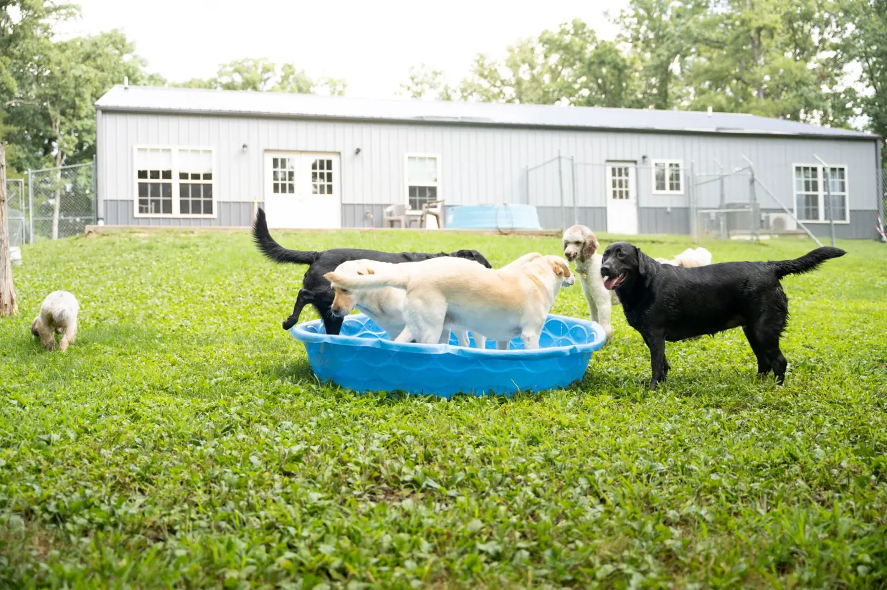

Home / Bridgeton
Bridgeton, MOBridgeton, MO video production and social media marketing.
Bridgeton is in north St. Louis County near the airport and I-70. We shoot here for auto shops, towing, moving and service companies.
Show Bridgeton the work behind your name.
With so much traffic passing through, Bridgeton is a strong market for auto and towing businesses. Local ads put you in front of drivers who need you now.
One local team handles it all for Bridgeton companies: the shoot, the edit, the weekly posts and the ads that reach Bridgeton and nearby towns.
Where we shoot: We shoot around Bridgeton's neighborhoods and the busy commercial roads near the airport, I-70 and St. Charles Rock Road.
Monthly content starts at $795/mo and paid ads at $1,150/mo.
Who we film most in Bridgeton.
Three of the industries we work with most around Bridgeton.
Customers don't trust what they can't see.
Auto Repair Shops in BridgetonTowing CompaniesNobody plans to need a tow, but they remember the company they saw doing it well.
Towing Companies in BridgetonMoving CompaniesPeople pick movers they trust with everything they own.
Moving Companies in BridgetonWhat Bridgeton businesses usually start with.
Most Bridgeton businesses start with one content plan and add ads aimed at Bridgeton and nearby towns when they're ready.
Growth + Google ads
$1,495/mo content + $1,150/mo ads · $625 setup
Drivers search for a shop when the check-engine light comes on and pick the one they trust, so search ads plus real tech content win.
Auto Repair ShopsEssential + Google ads
$795/mo content + $1,150/mo ads · $625 setup
Almost every tow starts with an urgent search, so Google ads are the core and simple truck content shows you're local and fast.
Towing CompaniesEssential + Google ads
$795/mo content + $1,150/mo ads · $625 setup
People search for movers once they have a date, so Google ads drive most bookings while crew content builds trust.
Moving CompaniesMonthly content
- Essential · $795/mo · about 9 posts a month (3 reels, 6 photo/graphic)
- Growth · $1,495/mo · about 15 posts a month (6 reels, 9 photo/graphic)
- Domination · $2,195/mo · about 22 posts a month (10 reels, 12 photo/graphic)
Paid ads management
- Meta ads (Facebook + Instagram) · $1,150/mo + $625 one-time setup
- Google ads (Google + Bing search) · $1,150/mo + $625 one-time setup
- Meta + Google (Both, combined) · $1,950/mo + $1,025 one-time setup
Ad spend is paid directly to the platforms.
Ad cost calculatorFrom the owners.
What local business owners say after working with us.
This media production company is top-notch! Max was awesome and such a pleasure to work with! We got some awesome footage and video of some amazing cars, and we couldn't have done this or created some stellar images without him and his media production company! If you're looking to spice up your marketing with NEXT-LEVEL photos and video, then look no further than Onyx Media STL! Great job, and thank you.
Max is amazing!! Not only is he personable, but he has an eye on how to make your business, vehicle, etc. stand out in a crowd with the photography and videography that he provides!!
Shot on real jobs.
A sample of the work we make for businesses around Bridgeton.





We also serve.
Close to Bridgeton and on our regular routes.
Bridgeton questions.
Do you film in Bridgeton?
Yes. We shoot on location in Bridgeton, across St. Louis County, and nearby Hazelwood, Maryland Heights and St. Charles. Our studio is in St. Charles.
Do Google ads work for drivers passing through?
Yes. Search ads can reach people near Bridgeton the moment they search for towing or repair, even if they're just passing through.
Which Bridgeton businesses do you work with most?
Across Bridgeton we often work with auto repair shops, towing and roadside companies and moving companies, plus other home service, automotive and local service businesses.
What does it cost for a Bridgeton business?
Content plans are $795, $1,495 or $2,195 a month. Around Bridgeton, auto repair shops usually start with Growth content at $1,495/mo plus Google ads at $1,150/mo and a $625 one-time setup. You pay ad spend directly to the platforms.
Is there a contract?
Most plans are month to month. A special offer may come with a set term, stated before signing. Ask about current specials.
Let's fill your schedule in Bridgeton.
30 minutes. We'll look at what you're posting now, what competitors around Bridgeton are doing, and what we'd film first.